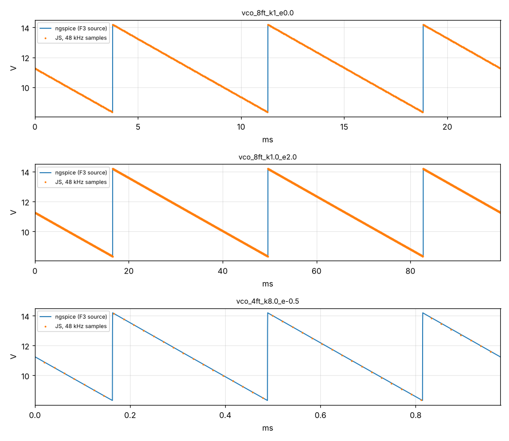
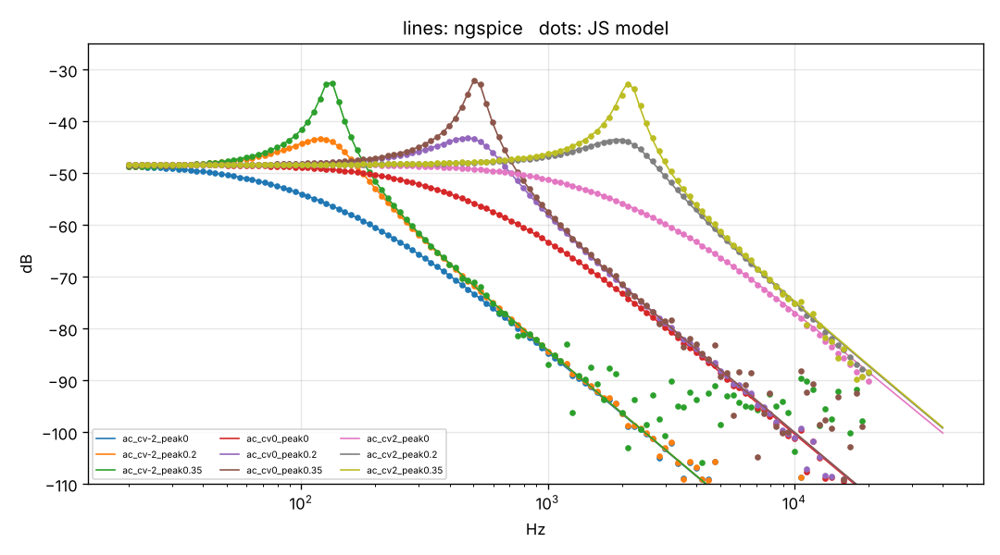
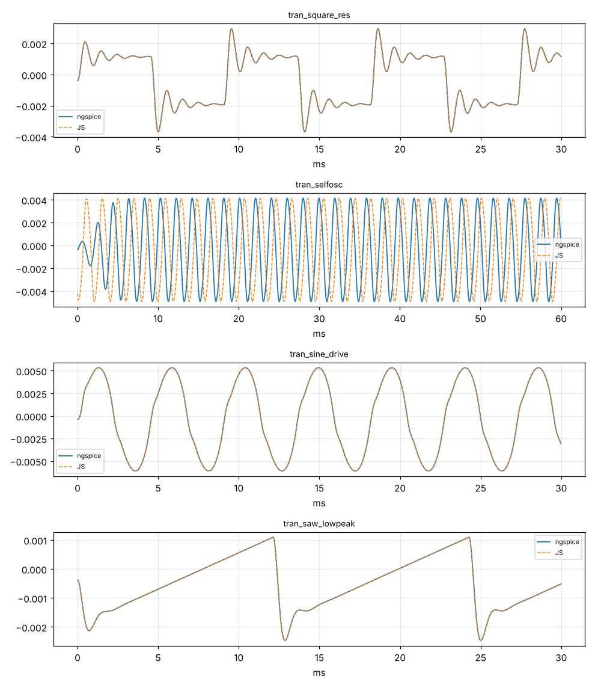

Korg MS-10, component by component
A circuit-level model of the MS-10 running in a Web Audio AudioWorklet. Each block is built from the service-manual schematic, simulated in ngspice, and the JavaScript model is checked against that simulation.
MS-10 VCO (saw) into the VCF (KORG35)
Push Peak to the top for self-oscillation, as on the real panel.
Status
| Block | State |
|---|---|
| VCF (IC16 KORG35) | Real external part values from the manual, validated against ngspice |
| VCO core (expo, ramp, reset, buffer) | Validated against ngspice: pitch within 3 cents from 30 Hz to 3 kHz |
| VCO wave shaper (pulse, PW, triangle) | Next |
| VCA, EG, MG (LFO) | Planned |
VCO validation: JS model vs ngspice
Saw at the F3 buffer for three settings (line ngspice, dots JS samples at 48 kHz):

Pitch, ramp limits and levels per case in vco_report.md.
VCF validation: JS model vs ngspice
Frequency response across cutoff and peak settings (lines ngspice, dots JS):

Transients at the KORG35 output pin, including drive and self-oscillation:
